vamo, vamo, vamo…
Posts tagged fotos
Cobertura Maratona SP 2010
28 years
by Alecão
in Ex-sedentário
Ontem, eu não participei da corrida, mas fiz questão de documentar esta prova.
Fiz isso através do vídeo abaixo:
Fiquei queimadinho do sol, culpa desta pele rosada que eu tenho.
Queria ter filmado a chegada do Thiago mas não deu… Família no pé me ligando, já viu?
Encontrei com o Claudio, que estava radiante e tirei algumas fotos:
Que dia maravilhoso!
108 years
by Claudião
in Ex-sedentário
A corrida foi melhor do que poderia esperar. Superou até as expectativas que eu tinha antes mesmo do ataque de ansiedade que me fez ganhar 5 quilos.
Quando eu vi havia terminado a corrida em 03h16m41s eu fiquei muito emocionado. Liguei para a esposa e a voz saiu embargada, lábios frouxos e em forma de bico, como os de crianças prestes a ficar em prantos. A noite, então, nem se fala. Eu não tinha idéia de que tinha demorado tanto para chegar no tapete da largada. Meu tempo líquido foi demais de bom. Estou até agora meio bobo, satisfeito e orgulhoso.
Mal dá para acreditar que fiz os 25km em 03h02m31s.
Sobre a corrida. Eu estava super nerovoso, desde a hora que acordei. Por mais que tivessem me dito o contrário, eu temia que os quilos a mais fizessem com que eu me machucasse, quebrasse nos primeiros kms, etc…
Para a minha sorte no ponto de ônibus eu vi uma corredora, que sempre vejo passar na avenida, mas nunca tinhamos conversado. A Luíza, que ia para a sua segunda Maratona de São Paulo. Não fosse ela eu teria tido um colapso de nervoso, por causa do ônibus que se atrasou.
Fomos juntos (de ônibus e trem) até a largada onde acabamos nos perdendo, mas eu já fui pronto para correr e a Luíza ainda tinha de se preparar e guardar os pertences dela. Adorei a Luíza, quem sabe eu ainda a acompanhe nos treinos longos dela no Toronto.
Assim que me perdi dela, uma supresa. Encontrei um conterrâneo. Nossas mães são vizinhas. Ambos não acreditávamos naquele encontro. Um registro disso e a confirmação do convite. Venha fazer parte do blog e das corridas Petelo. Será muito bem-vindo.
Quase na hora da largada e vejo o Fabão, foi um prazer poder abraçá-lo depois de tantos comentários trocados. O Fabão tentando manter a concentração e eu lá, falando mais do que matraca na semana santa.
Eu o Fabão caminhamos até bem próximo ao tapete nos cumprimentamos e cada um partiu no seu ritmo.
Segui como dava e, contrário do que supunha, só fiquei mais tranquilo quando os corredores dos 10km seguiram no caminho deles. Sei lá, fez bem ao psicológico saber que eramos muitos, os quartas-feiras.
Achei muito bacana a festa que tinha na Praça Panamericana, as sombras das arvores são bem-vindas. Ainda mais para mim que nunca fiz um treino curto sequer que se iniciasse antes das 09:00. Foi menos dificil correr no sol que eu esperava. No fundo, achava que morreria, só pode.
Toda oriental que passava eu olhava para o pés, na esperança de reconhecer a Maymi através dos seus tênis invocado.
Também próximo a Praça Panamericana puder ver Thiago e Paulo, gritei para que eles acelerassem porque eu ia no encalço deles. Mais um cumprimento do Fabão que aquela altura devia estar uns dois km na minha frente fui na batida. No Villa Lobos o número de corredores aumentam. Muitos visitantes do parque correm o trecho que segue do Portão principal até a entrada do esctacionamento do lado. A partir do 18km mantive-me firme para não perder a passada. No km 21,1 eu subi ainda pomposo a viaduto da Cidade Universitária. Mas na avenida da raia olímpica, como esperado, eu me arrastava. Um trotezinho para lá de safado. No posto de Gatorade parei, peguei dos copos e caminhei pelo tempo necessário para saboreá-los. Dali em diante até pensei na estratégia de eleger corredores para ultrapassar. Mas não rolava. No máximo emparelhei. Queria acelerar mas nas pernas já pesavam. Terminei sem sprint, mas muito feliz. Orgulhosíssimo.
Ah, também teve a caminhada de 3km. É que o ônibus que tomei em direção ao Ibipuera quebrou.
Foi um enorme prazer cumprimentar o amigo Fábio Namiuti, bem como os demais 100 Juízo que graças ao próprio Fábio, são famosos e conhecidos, como o Zebra e o Fábio Matheus. Também foi um prazer conhecer o Guilherme Maio. Do seu mal eu também padeço e vamos superar isso. Parabéns pelo esforço.
Não sei o que aprontei que não encontro mais a foto que a Janete (esposa do Fábio Namiuti) tirou de nós. Aguardo as do Alecão, então.
Não podíamos mais esperar (o Alecão e eu), e acabei não vendo o Fabão, Thiago e Paulo. O tempo deles foi ótimo, espero que a satisfação também.
A noite eu liguei para o Thiago e deu caixa-postal. Uma pena não termos nos visto.
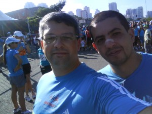
Mundo pequeno: Encontrei um conterrâneo: Petelo.
Nossas mães são vizinhas em Regente Feijó.
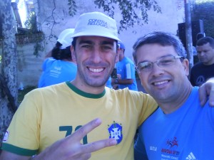
Grande Fabão
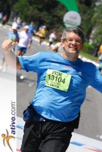
Antes de o sol me abater eu ainda estava assim: todo faceiro.

Da esquerda para direita: O Capitão Zebra, a zebra do dia e o Fábio Namiuti
CLASSIFICAÇÃO NUM ATLETA IDADE FX.ET. EQUIPE TEMPO TEMPO LÍQUIDO
1894 º 13038 ROBERTO YUITI MAKI 52 M5054 03:14:08 03:02:20 NIPPON
1895 º 11736 EDUARDO CONSTÂNCIO 44 M4044 03:05:56 03:02:21 molusco DUDA
1.896 º 13104 CLAUDIO LUCIO DUNDES 36 M3539 EX-sedentário 03:16:41 03:02:31
1897 º 11863 DANIEL MARMUGI FARACHE CORRER DA SILVA BORA 33 M3034 03:07:42 03:02:39
1898 º 6250 VITOR RODRIGUES DE OLIVEIRA 58 M5559 03:06:16 INDIVIDUAL 03:02:40
BrincaBento na Cãominhada Paulistana
48 years
by Claudião
in Ex-sedentário
Neste domingo o Bento Não Serviu-me de lebre . Muito pelo contrário, NÓS Que o acompanhamos NUMA festa Que, a bem da verdade, Foi Uma cachorrada. A paulistana cãominhada Aconteceu na Avenida Politécnica, Onde estara o pórtico da Chegada dos 25 quilômetros da Maratona (Será Que eu o alcançarei.)
O Bento Tirando o Seu RGA
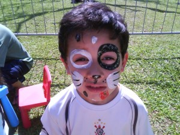
O Henrique de Dálmata
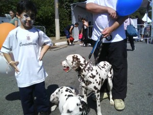
Três Dálmatas
Treino tímido mas animado
48 years
by Alecão
in Ex-sedentário
Domingo passado (sei faz tempo e que relaxo) eu treinei por 20 minutos e brinquei bastante com meus filhos.
Tiramos fotos… Estou postando para ver se eu me animo… hehehe… Vamos lá Alecão, desanima não!
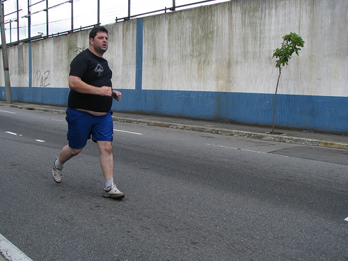
Clique na foto para ver a galeria de fotos.
PS.: Essa barriguinha não está sexy? 🙂 / 🙁
Lento Gordo Forte – LGF 001
128 years
by Claudião
in Ex-sedentário
Este post eu dedico a minha amada esposa, que está me dando uma força incrível neste momento e me propocionando a chance de fechar um ciclo.
Dedico também este post ao Thiago, segura este coração, meu amigo, e ao Fábio Namiuti, que embora não tenha culpa nenhuma de minhas insanidades, e de quem mais me lembro com certo orgulho nos meus treinos sem juízo.
Como comentei no blog eu engordei nos últimos 7 dias. Não importa, os treinos de terça e de quinta são a prova de que os quilos a mais até ajudaram na corrida, só tenho de me cuidar para que isso não afete demais meu psicológico. Seria fatal.
Na terça-feira, enfrentei subidas rotineiras com um afinco inédito. Foram gostosas de subir e senti que tinha força para me impulsionar. Seis km em 47 minutos, mais exercícios de força. Já consigo executar duas séries de abdominais. Palmas para mim!!!!
Quarta-feira a noite eu tive uma crise do meu distúrbio alimentar. Mas na quinta-feira acordei bem e só não corri, porque ainda passava mal com tudo que tinha comido na noite anterior. Por isso, enfiei a tralha na mochila já pensando num treino sem juízo.
Como na quina-feira santa, transformei-me em Lento Forte, desta vez, Lento Gordo Forte, na loja de reparos da Benê, grande amiga e incentivadora. Fotografei como isto acontece.
Assim que saí da loja da Benê foi que eu senti o peso absurdo da mochila, acredito agora que só não estou de cama, porque os quilos extras me deram suporte.
Segui num trote lentíssimo, mas muito bom, considerando o saculejo desajeitado nas costas (preciso comprar uma mochila igual a da Mari). Abaixo tem um link do percurso. Segui passeando e desligado que eu sou até me perdi do caminho e corri 200 metros na Marginal Tietê (ai de mim se a Mari ler isso).
Voltando um pouco, mudei de caminho, quando cheguei na Estação Sumaré do Metrô eu me enveredei pela Sumaré, quando já estava cercado de Palmeirenses que me dei conta de trajava preto e branco e piscava na minha testa um letreiro enorme: “Sou corinthiano, mas não batam em mim, por favor! Mas eles nem perceberam minha presença. Isto é sacanagem. Eu lá, sentindo-me o máximo e ninguém reparou. Triste demais.
Depois de passado o Viaduto Antártica o plano era seguir pela Marquês de São Vicente até a Ponte do Piqueri, mas preocupado com as costas e com a mochila cujas as alças vão se afrouxando conforme o saculejo nem vi como fui parar na Marginal Tietê, segui pela calçada até encontrar um rua qualquer que saísse dela. Foram ums 200 metros que não acabavam mais.
Dei uma paradinha rápida na Marquês para ajustar as alças da mochila e seguir no meu trote. Senti um pouco de medo de passar rente a favela que tem na altura da linha do trem, no Piqueri, mas segui determinado e fui novamente ignorado. Não dou mais cartaz mesmo. Logo depois eu paro de trotar e sigo caminhando pela Raimundo Pereira de Magalhães até casa da Vó do Henrique, onde ele me esperava com um delicioso abraço no paizão melado de suor.
Ponto negativo do treino: Pilei concreto por 14kms. Foi trotinho, foi lento, mas não façam isto pelo amor de Deus. O treino foi sem juízo, sou fascinado pela adrenalina que isso causa, mas é um perigo, reconheço.
Ponto positivo: Estou com a confiança a 1000. Agora eu até conto com este peso extra para me divertir nos 25km da Maratona. Dez dias atrás eu não teria suportado o saculejo da mochila pesada. Não estou aqui fazendo apologia a gordura, mas ela até que me ajudou.
Link para o percurso.
http://www.mapmyrun.com/route/br/s%e3o%20paulo/111127141553966695
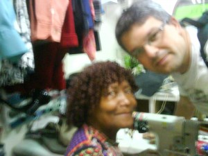
Obrigado Benê, você é demais minha amiga.

Corrida Infantil da Corpore
68 years
by Alecão
in Ex-sedentário
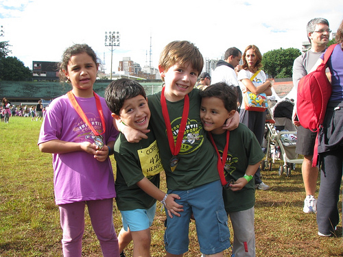Olívia, Henrique, Dante e Maurício participaram da corrida infantil da Corpore, foi a primeira corrida de cada um. Clique na foto e veja todas as fotos que eu tirei. A Olívia e o Maurício (meus filhos), não se cabiam de tanta alegria (2 medalhas no mesmo dia). E querem mais… Tenho vídeos também que irei postar em breve.
Crianças na natação
28 years
by Alecão
in Ex-sedentário
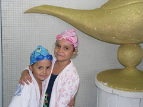Sabado passado a Olívia e o Maurício (meus filhos) participaram de um duathlon (coitados).
Mas foi obra do destino ter duas competições no mesmo dia.
Era 11 horas quando eles ajudaram a turminha em uma maratona de revezamento aquático. Clique na foto para ver todas as fotos.
Lento Forte turismo com as pernas – LSD 004
88 years
by Claudião
in Ex-sedentário
Antes de tudo, um agradecimento aos amigos. Os comentários do último treino foram fantásticos e me deram um suporte com o qual pude improvisar no domingo e ser muito feliz. Noutro tempo teria voltada pra casa triste e “comeria” toda essa tristeza e um pouco mais.
Sábado: Descanso para as pernas e uma ligação para o Miro para perguntar se podíamos fazer aquela nossa caminhada, no domingo. Ele respondeu positivamente e tratei de ir cuidar da logística. Como seria caminhada apenas, nada de gel. Para os dois eu comprei: 6 unidades de bananinha de Ubatuba; 1 pacote com clube social; 2 gatorades e muita água. Já tinha pensado tudo. Cada um com um cinto de hidratação. Revezamanto da mochila (com a garrafa de 1,5L e os dois gatorades. E quem estivesse sem a mochila, descansaria do peso nas costas mas carregando outra garrafa de 600ml na mão. Na minha conta era suprimento que daria para oito horas de caminhada, contando que sairíamos de Jundiaí às 06:00 horas.
A caminhada consistiria em tomar o primeiro trem em Pirituba (estação minha de todo dia), saltar em Jundiaí e vir caminhando até em casa ( Km 17,5 da Bandeirantes).
Quatro horas da manhã. Bom, está cedo ainda. O Miro deve chegar logo. Eu tinha levantado as 03:20 horas e caminhei vinte minutos com aquele peso monstro para chegar até a estação.
Quatro e quinze e nada do Miro.
Quatro e vinte. O trem chegou e agora. Na dúvida, tomei-o sozinho mesmo.
Enquanto via o final da balada que acontecia dentro do trem. Tentava decidir o que fazer da minha vida. Não estava muito a fim de ficar oito horas caminhando sozinho, não. Então já tendo decididio o que fazer, ainda restava decidir o que fazer com aquele material todo.
Saltei na estação de Jundiaí, conservada com as características de outrora, no banheiro, comecei a minha transformação em lento forte.
Pochete virada para frente com celular, doc e dinheiro. Um cinto com uma garrafa de um lado, com a outra contrapondo o peso do outo lado. Mas ainda restavam na mochila os dois gatorades, uma água de 600Ml e outra de 1,5L. Jogar algo fora? De jeito nenhum. O jeito foi carregar na mão a água de 600ml e um gatorade para ficar apenas (?) 2 litros de litros de líquido na mochila e as comidinhas.
No meu novo plano fui ao terminal que ficava ao lado da estação para tomar um ônibus que pudesse me deixar já na Bandeirantes. Se o Miro estivesse comigo iríamos caminhando desde ali. Tomei um micro-ônibus que sai mato a dentro e me deixou debaixo do Km 46, numa estradinha sinistra para aquele horário (06:25 horas).
Com toda aquela tralha eu parti do Km 46 no trotinho super lento que era o melhor que eu consiguia fazer naquelas condições. E assim fui até o km 29.
Eu vinha na contramão da rodovia que estava vazia. Nenhum carro. Torci para não ver nenhum desastre horrível. Depois de muitos kms que vi se tratar de uma carreta atravessada na pista, queimada, mas já estava sendo retirada. Os ciclistas da Bandeirantes se refestelaram. Treinão de luxo já que não precisavam rodar no acostamento.
Tomei mais água do que devia. E quando a garrafa de 600 ml estava pela metade eu me desfiz dela, não aguentava mais carregá-la. E quando cheguei nos 10 km de treino ja tinha tomado um gatorade todo só para ficar com as mãos livres e poder curtir apenas o peso saculejando nas costas e o da cintura. Parei de trotar na placa de 29km e caminhei até próximo a um Posto de Serviços. Ali eu parei para um pit stop e praticamente tomei um banho de água mineral e nem sei como consegui caminhar do 28 aos 17,5 tendo tomado tanto liquido.
Já tinha feito meus 17 quilômetros de trote e àquela altura tudo era festa. Saquei até o fone de ovido para curtir um som. Tirei a bermuda encharcada e fiquei só com a de ciclista. Com o peso apenas das garrafinhas na cintura (já estou acostumado) fui parando para fotos e ri muito sozinho quanto vi que tinha escrito no treino de sexta que corri até o Rancho da Pamonha. Não era Rancho, é “Rei da Pamonha”. Lembrei na hora da memória do Fábio Namiuti. COMO VOCÊ CONSEGUE CARA? Entre os kms 18 e 17 o passeio terminou. Debaixo da Ponte que me leva pra casa. Engraçado é que o treino terminara ali. Mas eu já estava meio ansioso para chegar em casa em corri quase mil metros.
Na rua de casa, minha redenção. O Marcos lavava o carro na rua. Quando ele me viu eu ja estava sem os tênis e a tralha. Falei: está esperando o quê para me molhar.
Muito bom. O treino foi de 17km em 02H30Min. As fotos do antes e depois vem abaixo. Depois do almoço que mei conta de que eu tinha levantado às 03:20 horas para essa farra. Muito sono e poucas brincadeiras com o Henrique (única parte ruim). VALEU AMIGOS.

04:22 horas. Eu no trem e balada no trem com direito a show de rebolation.


Estação de Jundiaí (05:45 horas) bem bonita e conservada em suas caraterísticas.

Tchau buzão, que agora vou com a pernas.

Essa é a estrada de onde viemos no ônibus (só eu e o motorista).

Aqui começou o trote “pesado”.

Posto de Gasolina entre os 29 e 28. Eu caminhava desde a placa de 29. Parada para um xixi. Banhinho, lanche e descanso. Daqui pra frente fui só curtindo.


O Pico do Jaraguá visto. Eu estava debaixo da Pista do Rodoanel (km 24)

Risos: é Rei da Pamonha, não Rancho da Pamonha. Vai querer copiar o Fábio Namiuti…

O Pico do Jaraguá visto do final do passeio km 17,5

Fim do Passeio no km 17,5. Bora pra casa.

A 30 metros do portão de casa. Redenção!
Enquanto isso no interior…
108 years
by Claudião
in Ex-sedentário
Enquanto todos os amigos de blogs e equipe estiveram tomados com eventos especiais neste final de semana, os ex-sedentários Alecão e Claudião estiveram no interior de São Paulo (Presidente Prdente/Regente Feijó/Indiana) para uma festão em família: a primeira depois da morte dos nossos avós.
Sábado: O Alecão chegou antes na casa da minha mãe em Regente, às 23:30 horas da sexta-feira. O resto da patota, incluindo que este escrevinhador, chegou no sábado cedo.
Depois de uma noite mal dormida num ônibus (sete horas de viagem) e um café maravilhoso com pães confeitados pela minha mãe, Alecão e Rafael toparam fazer um treininho no calorão brabo de Presidente Prudente.
Foram 4 quilômetros, ou algo em torno disso, com direito a umas voltinhas numa pista de atletismo de um campo de futebol. Até tentei fazer uns pliométricos os quais o Rafel os chamou de epiléticos. Pela aparência tosca com que os executei talvez fosse a melhor designação mesmo.
Depois do treino, um banhão e tivemos de encarar uma MARATONA de churrasco que durou a tarde toda.
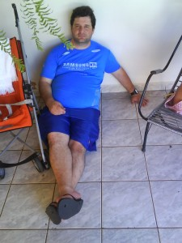
O Alecão depois do Treino. Parabéns, Alecão, que venham os nossos próximos treinos juntos!
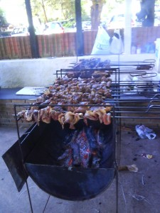
Fotos do problemão que tivemos de enfrentar. O que fizemos com galhardia. Mas não foi fácil, não! Pra descer toda essa carne com o calor que estava fazendo foi preciso muita coragem e muita cerveja.
Domingo:
Antes da continuação da festa que iria domingão afora, fomos no sítio dos nossos avós. Aproveitando a oportunidade em que meu e filho e outros andariam de charrete com meu pai, participei de um desafio. As fotos ilustram como ele foi:
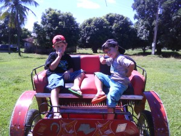
Os pilotos dos desafio: Dante e Henrique (meu filho), prontos para detonarem comigo.
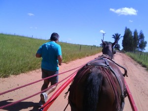
O DESAFIO: o ANIMAL contra a ÉGUA (puxando uma charrete com duas crianças e dois adultos)
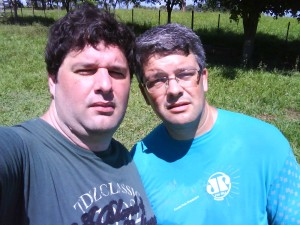
O Alecão me consolando por ter aberto o bico já no quarto quilômetro do desafio/treino.
Foi um treino muito divertido, justo no local onde passei minha infância e junto do meu filho e do meu pai.
Depois disso, mais churrasco. Sete horas de ônibus. Uma soneca e tudo de volta a mais perfeita normalidade onde se inclui a maldita, tormentosa e cuel DIETA.
.jpg "DSC01707 (576x1024)")
.jpg "DSC01739 (1024x576)")
.jpg "DSC01828 (1024x576)")
.jpg "DSC01874 (1024x576)")
.jpg "DSC01892 (576x1024)")
.jpg "DSC01934 (1024x576)")


{kind=link}
{kind=link}
{kind=link}
{kind=link}
{kind=link}
{kind=link}
{kind=link}
{kind=link}
{kind=link}
{kind=link}
{kind=link}
{kind=link}
{kind=link}
{kind=link}
{kind=link}
{kind=link}
{kind=link}
{kind=link}
{kind=link}
{kind=link}
{kind=link}
{kind=link}
{kind=link}
{kind=link}
{kind=link}
{kind=link}
Últimos comentários